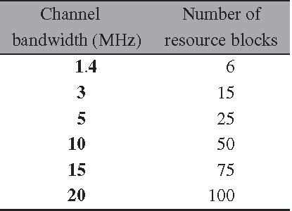
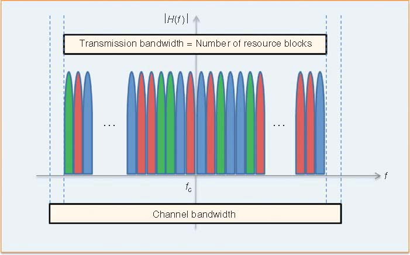

LTE时频资源
1 LTE频带资源
LTE标准规定了物理层信号传输所使用的频域资源。我们知道LTE标准的一个特点就是向后兼容3GPP制定的标准，因此先前3GPP标准中划定的频域资源，在LTE标准中仍然可以使用。另外，一些新的频带资源也划分过来供LTE标准使用。不同的国家为LTE划分的频带也会有所不同。
LTE支持FDD模式和TDD模式。在FDD模式中，频带资源是成对划分的，一个用户上行数据传输，一个用于下行数据传输，并且为了提高接收机的性能，这对频谱的上下行分开一定的距离，避免上下行干扰。3GPP的Release 11标准为LTE的FDD模式划分了25对频带，如下图所示：

Figure 1: Release 11 LTE FDD频带划分
3GPP的Release 11标准为LTE的TDD模式划分了11对频带，编号为33到43，如下图所示：

Figure 2: Release 11 LTE TDD频带划分
2 LTE带宽划分
LTE的带宽划分从1.4MHz到20MHz，一共划分了六个等级，如下所示：

Figure 3: Release 11 LTE 传输带宽
在LTE-A中引入了载波聚合技术，使得LTE系统的带宽可以超过最大的20MHz，极大的提高了系统的吞吐。对于1.4MHz带宽的系统，使用的带宽占信道带宽大约77%；对于3-20MHz的系统，使用的带宽大约占信道带宽的90%。之所以没有完全使用100%的信道带宽，是因为需要留出频带保护间隔，防止信号泄露出规定的信道频带，对其他频带的通信系统造成干扰。LTE传输带宽和信道带宽的关系如下图所示

Figure 4: Release 11 LTE 传输带宽和信道带宽关系
从上图可以看出，transmission bandwidth并没有占用所有的channel bandwidth而是留有一定的余量。这些余量的存在就是为了提供保护带宽。
3 LTE时间帧格式
LTE的时间帧格式如下图(\ref{fig:20150719lte-bandwidth})所示。

Figure 5: LTE 时间帧格式